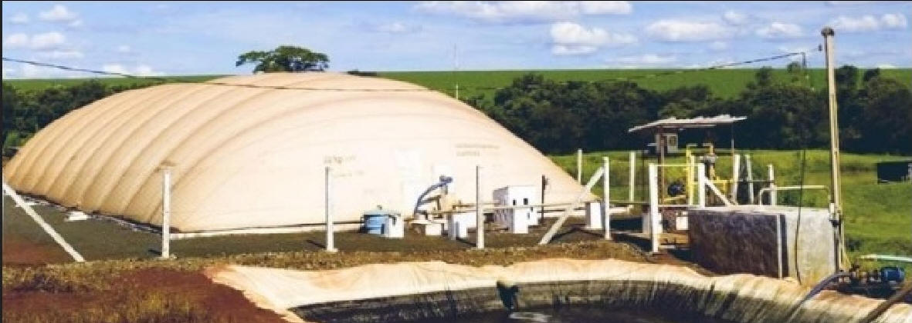
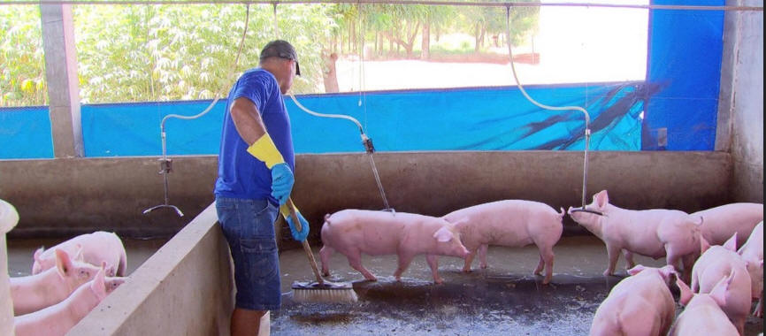
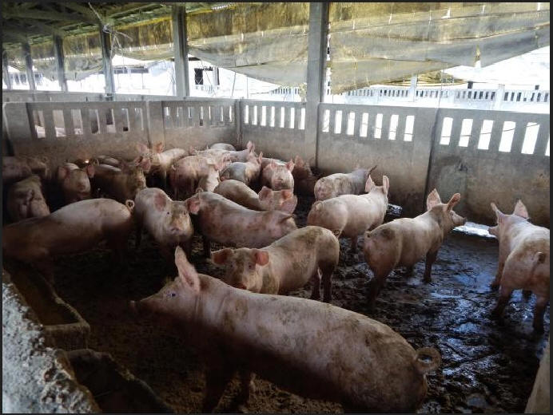
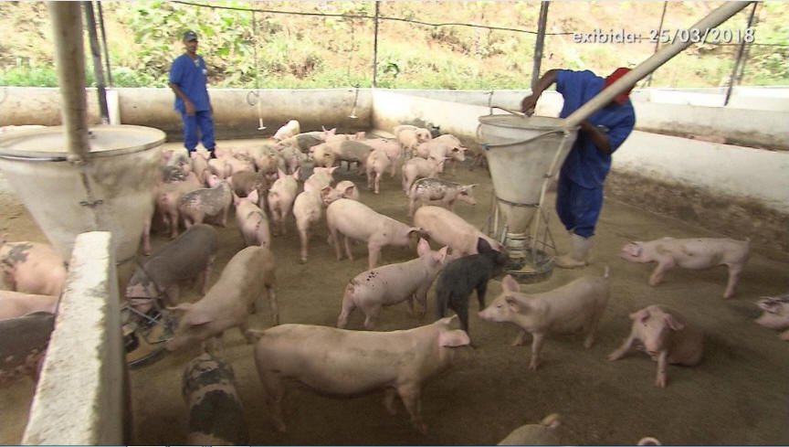

Devido à grande quantidade de dejetos produzidos pelos animais, o agricultor teve a ideia de criar o biodigestor para transformar as fezes dos porcos em gás de cozinha. No sistema usado pelo camponês, o esterco é colocado em uma caixa com capacidade de armazenar seis mil litros de dejetos.
O metano é um gás incolorcom estrutura molecular tetraédrica (CH4),com capacidade extremamente baixa de se dissolver em água (H2O).Com isso, aoentrarem contato direto com o ar atmosférico,seu poder calorífico se destaca,ganhando alto poder de inflamabilidade. O metano pode ser encontrado em aterros sanitários, refinarias de cana-de-açúcar, pântanos e combustores de biomassa anaeróbica.Como o metano é um gás com um alto poder de calor, pode-seobter a geração de energia térmica por meio de suacombustão, e esse energia pode ser transformadaem elétrica,utilizadaemhabitações locais. O objetivo deste trabalho é provar que se podeoperarum biodigestor com apenas dejetos orgânicos(fezes de animais)para a produção deeletricidade. Para isso, foi projetado um sistema de extração,coleta, armazenamento, queima e geração de energia.No projeto elaborado, a sustentabilidade foi o pilar mais cogitado, pois,para que este projeto possa ser montado emresidências,seucusto deveser o menorpossível.A partir dessaideia, na primeira sessão(extração e coleta), foram utilizadostubos de polietileno ou PVC e uma caixa d’água;na segundaetapa(armazenamento),utilizou-seum reservatório de polietileno;na terceiraetapa(queima do biogás), utilizaram-se caldeiras;e,por fim, na quarta e última etapa(geração de energia), foi utilizadoum gerador, de modo que todo o vapor liberado da caldeira pudesseser canalizado e encaminhado até ele, convertendo, assim,o vapor em energia elétrica.Por meiode um estudo mais aprofundado sobreo potencial de dejetos de vaca, porco, cachorroe galinha, chegou-se ao conhecimento de que as fezes de galinhas geram um teor de metano extremamente concentrado, assumindo maior rendimento de energia com sua queima de gás, o que possibilitariasuautilização e a comercialização de energia elétrica para residências e concessionárias.
Com a alta quantidade de recursosexistentesno planeta, o entendimento destesse torna cada vez mais visível, sendo aproveitados de forma comercial.Aquantidade e a variabilidade de materiais orgânicos que são descartados são incalculáveis, e por meiode estudos foi apontado o material que pode se tornar mais viável para as pessoas de baixa renda:as fezes de animais.Nas cidades do interior do Estado de São Paulo, as criações de animais são abundantes, e asprincipais fontes de geração de matéria orgânica vêm de fezes de gado, porcos e galinhas. Com base nisso, foram realizadas pesquisas para as quaisgrandes nomes da área cederam informações muito importantes.Considerando-se que aprodução de fezes é abundante em criações de animais, a geração de biogás é grandiosa. Com isso, ostrabalhoscom biodigestores são extremamente importantes.O biogásé composto basicamente por: metano (CH4), dióxido de carbono (CO2), hidrogênio (H2), nitrogênio (N2), oxigênio (O2)e gás sulfídrico (H2S)(DEUBLEIN; STEINHAUSER,2008).Como 70% do biogás é composto de CH4, tem-se que este pode fornecer maior potencial de queima e,com isso, maior concentração de calor, havendo maior geração de eletricidade. Os demais gases, encontrados em menores teores, são eliminados principalmente por processos de queima(DEUBLEIN; STEINHAUSER, 2008).Atualmente, o biogás é utilizadoemtermoelétricas e como biocombustível, mas a sua facilidade de queima pode fornecer um calor grandioso e,esta energia térmica,ser convertida em energia elétrica por alguns sistemas de conversão mecânica, comocaldeiras e geradores(TOLMASQUIM, 2003)
. O CH4 está presente em larga escala em matérias-orgânicas, destacando-se as fezes animais e os dejetos(CICERONE;OREMLAND, 1988).OBJETIVOSPara esteartigo, será apresentadaa proposta de projeção de um biodigestor, na qualserão utilizadas fezes de porcos, vacas, cães e galinhas. Assim, todo o biogás extraído das fezes será transformado em energia térmica e,posteriormente,em energia elétrica por meio de um sistema de transformação mecânica, que consiste em quatro etapas:extração e coleta;armazenamento;queima de biogás; egeração de energia.MATERIAIS E MÉTODOSLocal da pesquisaPara a projeção do gerador,foi utilizada uma propriedade rural, localizada na cidade de Mogi-Guaçu, interior de São Paulo, a qual continha87 galinhas, 1 vaca, 2 cachorros e 26 porcos.Levantamento de dadosOs dados obtidos foram coletados a partir de levantamentobibliográficoem artigos científicos e sites, bem como em campo a partir de um estudo de caso.Coleta e armazenamento de fezesForam coletadas as fezes manualmente nos pastos que os animais se alojavam e colocadas em recipientes de armazenamento(caixas d’água).
Construção e funcionamento do biodigestorA construçãodo biodigestorfoirealizada em três etapas:coleta e extração de CH4;armazenamento de CH4;equeimae geração de energia elétrica.Etapa 1: coleta e extração do CH4Nessa etapaforamutilizadosos seguintes materiais:?Reservatório de polietileno: com capaci-dade de 1.000 litros,contendo baixa massa, resistência àcorrosão, resistência àabrasão e alta flexibilidade, conforme demonstra a Figura 1a seguir. Em vista de um dos critérios do projeto, a viabilidade, optou-se por esse modelo para baratear o desenvol-vimento do projeto com a utilização de reservatórios residenciais de águas (caixas d’água).
